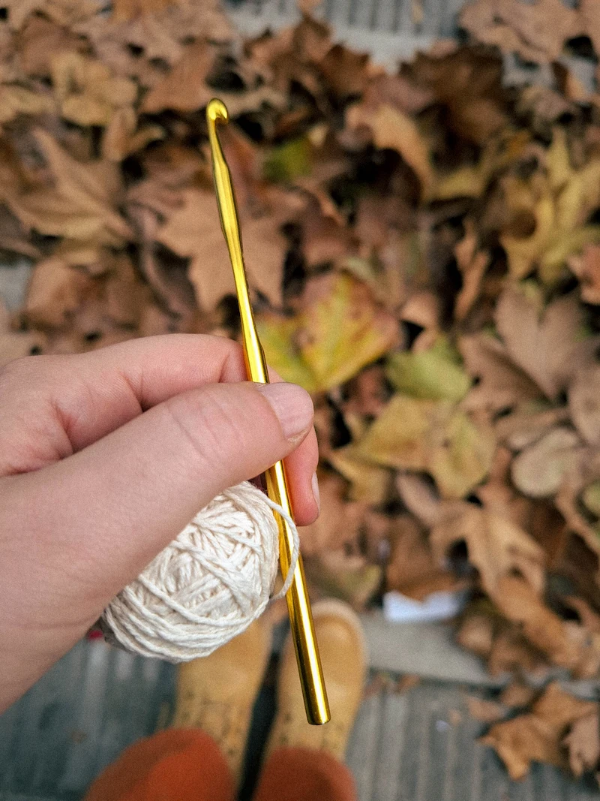
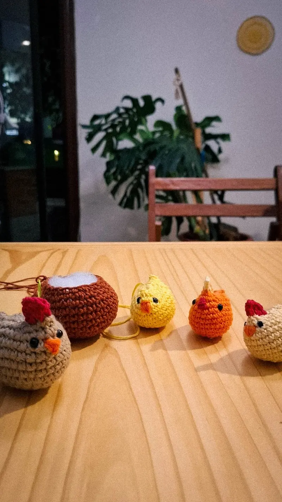

Circulo de crochet
El taller de crochet es mucho más que una clase de tejido, es un encuentro creativo, un círculo de
mujeres reunidas bajo un mismo propósito: la convicción de que crear con nuestras manos nos sana,
nos nutre, nos mantiene inspiradas, presentes y activas.
El espíritu del taller es brindarte una base de conocimiento sólida, para que puedas llevar tu
práctica de crochet todo lo lejos que quieras.
Partiendo desde cero, te acompaño en un ciclo completo de aprendizaje: materiales, técnicas, puntos
básicos, patrones, proyectos fáciles y divertidos.
🏡 Taller presencial
Tres Cruces, Montevideo
(Frente a la plaza Seregni)
Un taller como los de toda la vida: ese refugio íntimo, y presente, que nuestro cotidiano acelerado
anhela recuperar.
Dos modalidades:
Anual: febrero a diciembre
Ciclo de iniciación (3 meses): Partiendo desde cero, te acompaño a dar tus primeros pasos en el
mundo del crochet. Materiales, técnicas, puntos básicos, patrones, proyectos fáciles y divertidos
para que aprender se sienta liviano y disfrutable.
Inscripciones 2026 cerradas

